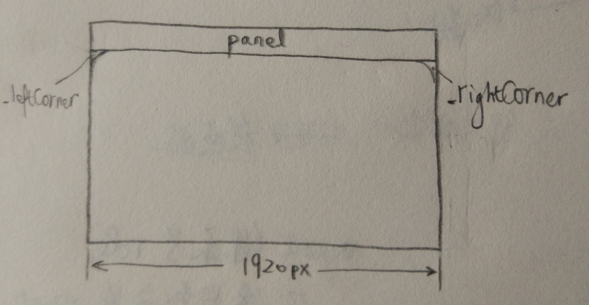

Gnome is an open source desktop environment under Linux.
Desktop settings: GNOME
Themes and icons
1 | sudo apt install gtk-theme-config |
打开User Themes选项进行主题的选择。
安装主题和图标有两种方法，一种是通过PPA源安装；另一种是将文件克隆到~/.icons下。
安装 OSX Arc 主题（推荐）
1 | sudo add-apt-repository ppa:noobslab/themes |
安装 MacOS High Sierra主题（可选）
https://github.com/B00merang-Project/macOS-High-Sierra
下载安装之后
1 | gsettings set org.gnome.desktop.interface gtk-theme "macOS High Sierra" |
安装 Macbuntu主题（可选）
1 | sudo add-apt-repository ppa:noobslab/macbuntu |
由于macbuntu还没出bionic的源，
Intall Vivacious Colors GTK Theme（可选）
1 | sudo add-apt-repository ppa:ravefinity-project/ppa |
安装图标
安装la-capitaine图标（推荐）
1 | sudo add-apt-repository ppa:dyatlov-igor/la-capitaine |
Nautilus file manager
Drag-and-drop for move or copy?
Press Ctrl for Copy and Shift for Move.
Once I installed nautilus but it responsed very slowly.
So I use a terminal to open nautilus and I see lots of warnings like:
(nautilus:4258): Gtk-WARNING **: 17:34:12.268: Duplicate child name in GtkStack: …
Later I found this is because I had put too many files in ~/Templates, so I removed them and clear the cache
1 | sudo rm -r ~/Templates/2，标准例程-HAL库版本 |
and restart nautilus file manager, it’s ok.
Touchpad
For wayland, it’s ok.
For Xorg:
1 | sudo pacman -Syu libinput-gestures |
The way for debugging gnome-shell extension
1 | journalctl /usr/bin/gnome-shell -f |
gnome-extensions disable my-extension@wsd to disable the extension
Alt+F2 and input r to restart.
gnome-extensions enable my-extension@wsd to reload the extension
Here I append the command for logout current desktop user:
1 | sudo pkill Xorg # Or sudo pkill Xwayland |
Reading source code of gnome shell extension: fullscreen-hotcorner
1 | function _removeHotCorners() { |
This code part uses arrow function. It is equivelent to
1 | this.hotCorners.forEach( |
So the aim of function _removeHotCorners is to clear all hot corners that exist.
ui.layout.HotCorner._rtl suggest the text direction in the widget.
you can go to ~/.local/share/gnome-shell/extensions for reading another source code.
Looking glass tool
enter by Alt+F2
exit by Esc
Write an extension on your own
Transparent panel
The top bar (panel) widget is created by gnome shell in ui.main.panel. The picture of some widgets below can be illustrated here:

Its css file is defined in gnome-shell/data/theme/gnome-shell-sass/widgets/_panel.scss
1 | $panel_bg_color: #000; |
so that we write css as
stylesheet.css
1 | .topbar-transparency { |
and we go to find the panel and corner name in gnome-shell/js/ui/panel.js
1 | var Panel = GObject.registerClass( |
Then we produces our extension.js
1 | 'use strict'; |
评论
shortnamefor Disqus. Please set it in_config.yml.